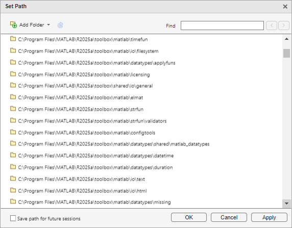

What Is the MATLAB Search Path?
The MATLAB® search path is a subset of all the folders in the file system. MATLAB uses the search path to locate files used with MathWorks® products efficiently.
The order of folders on the search path is important. When files with the same name appear in multiple folders on the search path, MATLAB uses the one found in the folder nearest to the top of the search path.
By default, the search path includes
The MATLAB
userpathfolder, which is added to the search path at startup, and is the default location for storing user filesThe folders defined as part of the
MATLABPATHenvironment variableThe folders provided with MATLAB and other MathWorks products, which are under
matlabroot/toolbox, wherematlabrootis the folder displayed when you runmatlabrootin the Command Window
Class, namespace, private, and resources folders
are special folders that cannot be specified explicitly as part of the search path. A
special folder is added to the search path implicitly when its parent folder is
specified as part of the path. To access the files and folders within a special folder,
you must add its parent folder to the path.
You can explicitly add folders to the search path for the files you run. For more information about adding files to the search path, see Change Folders on Search Path.
userpath Folder on the Search Path
The userpath folder is first on the search path. By
default, MATLAB adds the userpath folder to the search path
at startup. This folder is a convenient place for storing files that you use with
MATLAB.
The default userpath folder is platform-specific.
Windows® platforms —
%USERPROFILE%/Documents/MATLAB.Mac platforms —
$home/Documents/MATLAB.Linux® platforms —
$home/Documents/MATLABif$home/Documentsexists.MATLAB Online™ —
/users/.youruserid
Alternatively, to determine or change the current
userpath folder, call userpath.
By default, the userpath folder is also the startup
folder when you start MATLAB by double-clicking either the MATLAB shortcut on Windows systems or the MATLAB application on Mac systems.
MATLABPATH Environment Variable
The MATLABPATH environment variable can contain a list of
additional folders to be added to the MATLAB search path at startup. These folders are placed after the
userpath folder, but ahead of the folders supplied by
MathWorks. By default, the MATLABPATH environment variable is
not set. For more information on how to set the MATLABPATH
environment variable, see Set the MATLABPATH Environment Variable.
Determine If Files and Folders Are on the Search Path
There are several ways to determine if files and folders are on the search path. You can either check whether an individual file or folder is on the search path, or you can view the entire search path.
Check Whether File or Folder on Search Path
To determine whether a file is on the search path, run which
. If the file is on the
search path, MATLAB returns the full path to the file.filename
To determine whether a file or folder is on the search path, use the Files panel. Files and folders not on the path are dimmed. To ensure that the Files panel is set to indicate whether a file or folder in on the search path, right-click any file or folder, and select the Indicate Files Not on Path option.
View Entire Search Path
Use the Set Path dialog box to view the entire MATLAB search path. On the Home tab, in the Environment section, click Set Path. The Set Path dialog box opens, listing all folders on the search path. For more information on using the Set Path dialog box, see Change Folders on Search Path.

Alternatively, run the path command to view all the
folders on the MATLAB search path.
The Search Path Is Not the System Path
The search path is not the same as the system path. Furthermore, there is no explicit relationship between the MATLAB search path and the system path. However, both paths help in locating files, as follows:
MATLAB uses the search path to locate MATLAB files efficiently.
The operating system uses a system path to locate operating system files efficiently.
How MATLAB Stores the Search Path
MATLAB saves search path information in the pathdef.m
file. This file contains a series of full path names, one for each folder on the
search path.
By default, pathdef.m is in
matlabroot/toolbox/local.
When you change the search path, MATLAB uses it in the current session, but does not update
pathdef.m. To use the modified search path in the current and
future sessions, save the changes using savepath or the
Save button in the Set Path dialog box. This updates
pathdef.m.
In MATLAB Online, all changes to the search path are automatically saved.